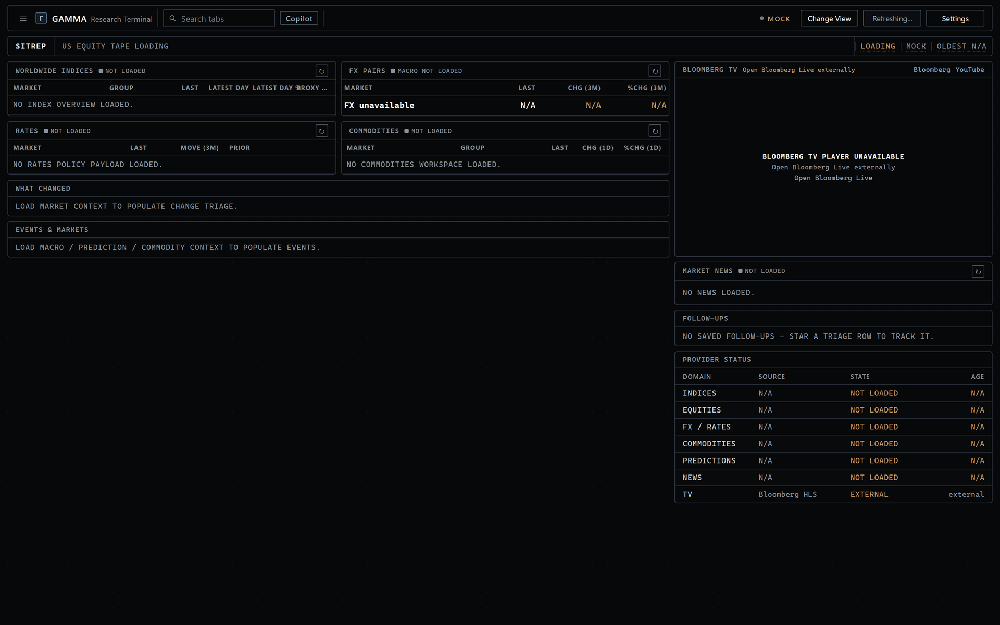
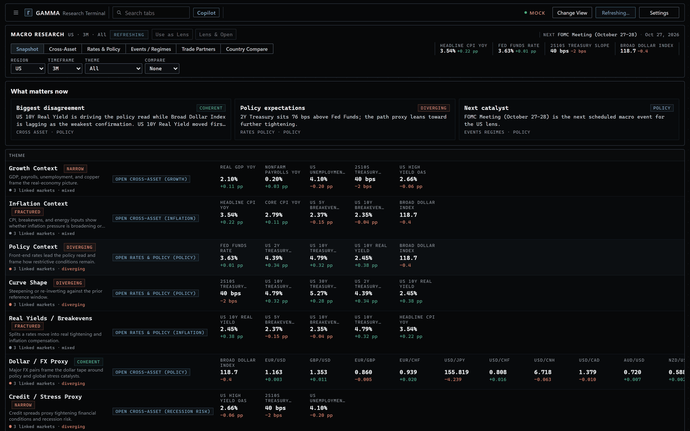
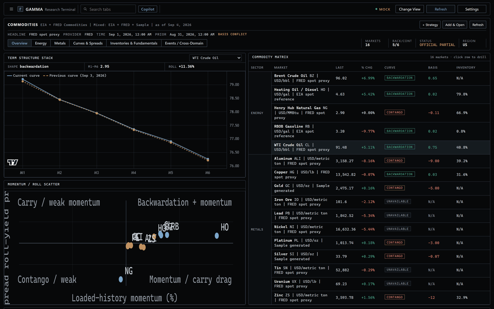
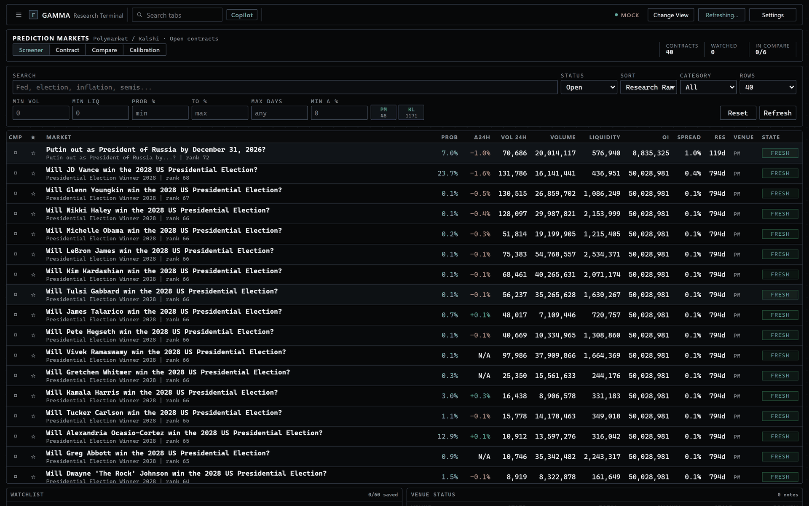
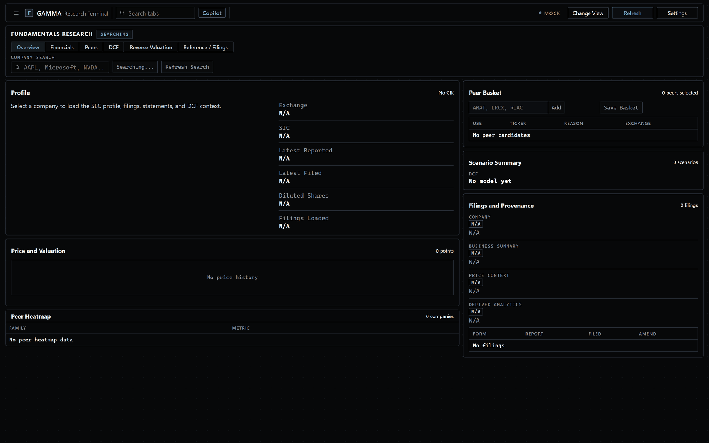
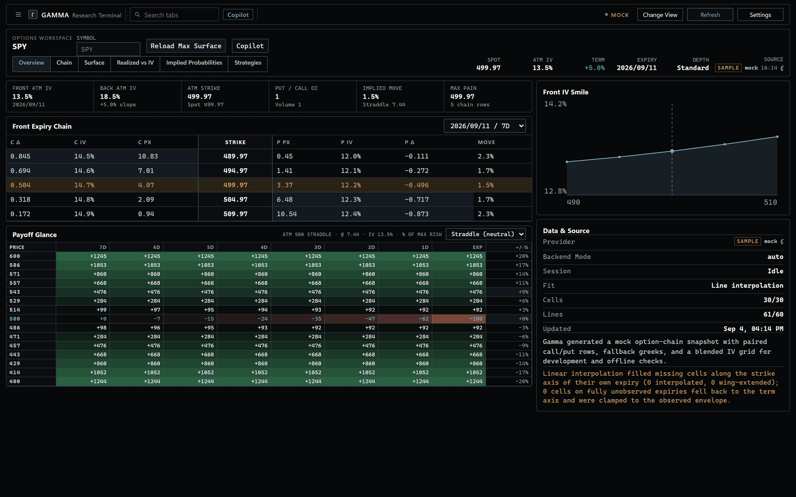
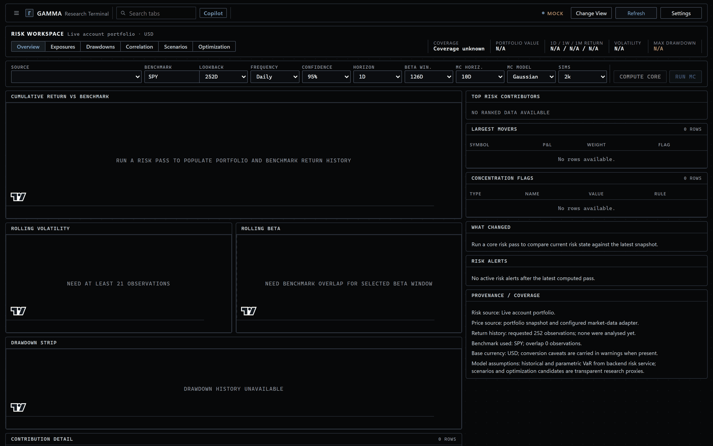
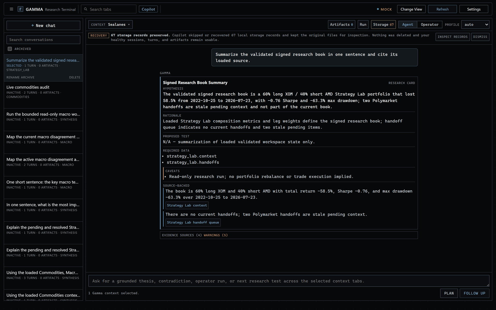
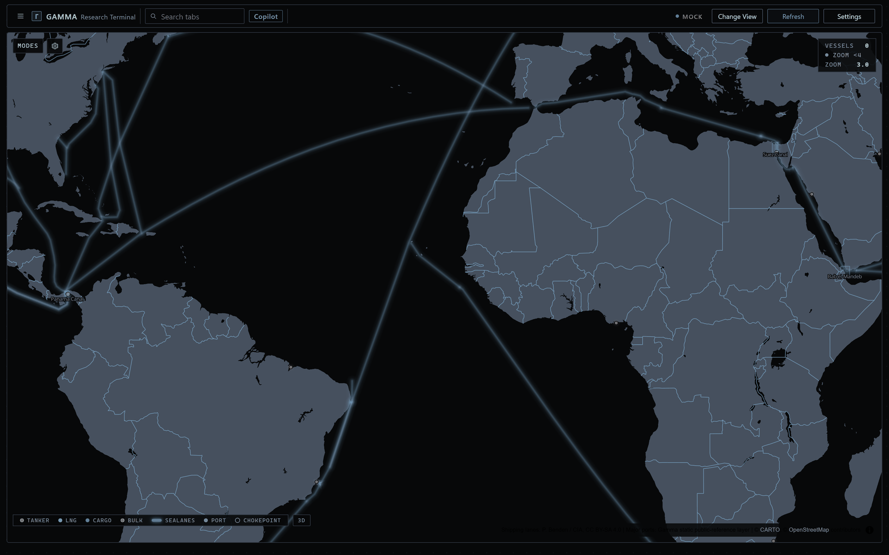

1- 1 Provider, state and age, per domain
Portfolio, risk, options, macro, commodities, prediction markets, crypto, SEC filings and live AIS on one plane — with a research scope that forwards from any surface into the next. Every value carries its provider, its retrieval time and the transformation applied. It cannot place an order. That is the point, not a limitation.
No hosted version. Clone it, add your keys, run it locally.
Every screen below is the real application running in mock mode — the same layout, density and provenance you get with your own keys attached. Sample data is labelled Mock because Gamma never quietly swaps sample rows in for a provider it could not reach.

1
1 2 3



1 2 3

Thirteen surfaces across two workspaces, reorderable, each with its own registered modes.
Ctrl+1…N
switches tabs; Shift+1…N
switches modes inside one.
Net liquidation, day P&L, gross and net exposure, cash weight, benchmark-relative performance, allocation and concentration — in your chosen base currency.
Local daily history · FX-converted positions · readiness diagnostics
Single-name or synthetic scopes normalised to 100 base-currency units. Total and annualised return, volatility, drawdown, beta, correlation, HHI concentration.
Overview · Scope Analysis · Comparables · Scenario · Saved
Read-only strategy objects: import CSV return streams, compose return-bearing objects, inspect drawdown and rolling-risk stress windows, reload saved runs.
Composer · Script · Backtest · Regime/Stress · Imports · Saved
Token screener over CoinGecko with narrative baskets, chain and turnover filters, plus DEX liquidity context from GeckoTerminal and basket-relative comparison.
Overview · Deep Dive · Flows & Liquidity
Live AIS over a server-side AISstream proxy that keeps the key out of the browser. Chokepoints, routes, ports, fleet watchlists and event replay on a MapLibre plane.
Live Map · Chokepoints · Trade Flows · Fleet · Event Replay
The pinned Research home. Cross-domain triage across seven domains with per-section freshness, backend-persisted follow-ups and context-preserving handoffs.
Single surface · no mode bar

1 2 3
Gamma is a research environment, not an execution platform. The read-only contract is exposed
by the API itself at /system/read-only-boundary,
covering both the TWS operator lock and the app-side refusal to execute.
Gamma is designed to help you inspect data, compare signals, and understand the calculations behind the screens. It is not designed to place trades or to hide its analytics behind unexplained scores.README.md
| Field | Answers | Example |
|---|---|---|
source_provider | Which provider produced this? | FRED · IBKR · SEC EDGAR · Kalshi |
retrieved_at | When did Gamma actually fetch it? | Timestamp, with a derived freshness label |
origin | Is this the provider's number, or Gamma's? | provider · derived · sample |
transformation_note | What did Gamma do to it on the way? | "YoY derived from index level" |
Broker, public-market, official-macro, on-chain, filing and AIS data. Most of it is free. Keys stay server-side and never reach the browser. Get every key →
| Provider | Feeds | Key | Status |
|---|---|---|---|
| IBKR / TWS | Portfolio, FX, IV surfaces, futures curves, price context | Account + running TWS | Live |
| Yahoo Finance | Default listed-market history for Research and Sitrep | None | Live |
| FRED | Macro series, derived YoY and spreads, metal proxies | FRED_API_KEY | Live |
| SEC EDGAR | Company facts, filings, statements for Fundamentals | Identity only | Live |
| US Treasury | Treasury curve snapshots for the US rates view | None | Live |
| Polymarket | Gamma API, Data API and CLOB probability history | None | Live |
| Kalshi | Market, event, history and trade endpoints | None | Live |
| CoinGecko | Token coverage, metadata, categories, price history | None | Live |
| GeckoTerminal | DEX networks, pool search, liquidity context | None | Live |
| EIA | Official US energy fundamentals and product spot | EIA_API_KEY | Optional |
| US Census | Live US trade-partner goods-trade rows for Macro | CENSUS_API_KEY | Optional |
| AISstream | Live vessel positions for Sealanes | AISSTREAM_API_KEY | Optional |
| OpenAI | Copilot, Fundamentals summaries, Script runtime | OPENAI_API_KEY | Optional |
| BLS · BEA · ECB · Eurostat · IMF · OECD · UN Comtrade · WTO · AKShare | Country compare and trade-partner depth | Env slots reserved | Planned |
Python 3.11+, Node, and Trader Workstation if you want the live broker path. Mock mode runs the entire application offline with sample providers, so you can see every surface before you connect anything.